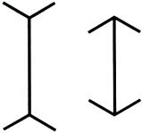
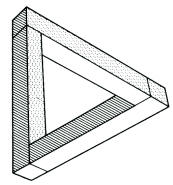
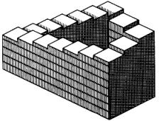
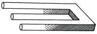
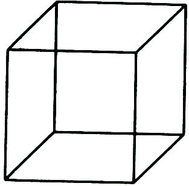

<!doctype html public "-//w3c//dtd html 4.0 transitional//en">
<html>
<head><meta name="viewport" content="height=device-height,width=device-width">
   <meta http-equiv="Content-Type" content="text/html; charset=iso-8859-1">
   <meta name="Generator" content="Microsoft Word 97">
   <meta name="GENERATOR" content="Mozilla/4.73 [en] (WinNT; I) [Netscape]">
   <meta name="Author" content="Jeffrey Mishlove">
   <title>The Roots of Consciousness: Science, To Err is Human</title>

<!-- google-analytics.com  START  (aync)-->
<script type="text/javascript">

  var _gaq = _gaq || [];
  _gaq.push(['_setAccount', 'UA-15825841-1']);
  _gaq.push(['_trackPageview']);

  (function() {
    var ga = document.createElement('script'); ga.type = 'text/javascript'; ga.async = true;
    ga.src = ('https:' == document.location.protocol ? 'https://ssl' : 'http://www') + '.google-analytics.com/ga.js';
    var s = document.getElementsByTagName('script')[0]; s.parentNode.insertBefore(ga, s);
  })();

</script>
<!-- google-analytics.com  END  -->

<!-- Histats.com  START  (aync)-->
<script type="text/javascript">var _Hasync= _Hasync|| [];
_Hasync.push(['Histats.start', '1,1087503,4,0,150,30,00000000']);
_Hasync.push(['Histats.fasi', '1']);
_Hasync.push(['Histats.track_hits', '']);
(function() {
    var hs = document.createElement('script'); hs.type = 'text/javascript'; hs.async = true;
    hs.src = ('http://s10.histats.com/js15_as.js');
    (document.getElementsByTagName('head')[0] || document.getElementsByTagName('body')[0]).appendChild(hs);
  })();</script>
<noscript><a href="http://www.histats.com" target="_blank"></a></noscript>
<!-- Histats.com  END  -->

</head>
<body>
&nbsp;
<center><table BORDER=0 COLS=1 WIDTH="600" >
<tr>
<td>
<center><font face="Arial,Helvetica"><font size=+2>To Err is Human</font></font></center>

<p><font face="Arial,Helvetica">To err is human. Understanding the mechanisms
by which humans repeatedly make errors of judgment has been the subject
of psychological study for many decades. Why do people disagree about beliefs
despite access to the same evidence, and why does evidence so rarely lead
to belief change? Psychological research has examined numerous risks of
assessing evidence by subjective judgment. These risks incude information-processing
or cognitive biases, emotional self-protective mechanisms, and social biases.</font>
<p><font face="Arial,Helvetica">All of these factors play a major role
in both sides of the debate betwen proponents and opponents of psychic
phenomena. No analysis of the controversies surrounding the nature of the
human spirit, and its propensity for greatness, would be complete without
a realistic look at the human proclivity for folly.&nbsp;</font>
<br>&nbsp;
<p><b><font face="Arial,Helvetica">The Psychology of Cognitive Biases</font></b>
<p><font face="Arial,Helvetica">The investigation of cognitive biases in
judgment has followed from the study of perceptual illusions. Our understanding
of the human visual system, for example, comes in large part from the study
of situations in which our eye and brain are "fooled" into seeing something
that is not there. In the Muller-Lyer visual illusion, for example, the
presence of opposite-facing arrowheads on two lines of the same length
makes one look longer than the other.</font>
<center>
<p></center>

<p><font face="Arial,Helvetica">We generally do not realize how subjective
this construction is. Instead we feel as if we are seeing a copy of the
world as it truly exists. Cognitive judgments have a similar feeling of
"truth" -- it is difficult to believe that our personal experience does
not perfectly capture the objective world.</font>
<p><font face="Arial,Helvetica">With a ruler, we can check that the two
lines are the same length, and we believe the formal evidence rather than
that of our fallible visual system. With cognitive biases, the analogue
of the ruler is not clear. Against what should we validate our judgmental
system?</font>
<p><font face="Arial,Helvetica">In the 1950s, researchers began to compare
how well expert judgments compared with simple statistical combining rules
in predicting mental health prognoses and other personal outcomes. Typically,
such studies involved providing several pieces of information -- such as
personality and aptitude test scores -- about patients or job applicants
to a panel of experts. These expert judges would then record their opinion
about the likely outcome in each case.&nbsp;</font>
<p><font face="Arial,Helvetica">Statistical predictions were obtained using
a "best fit" procedure that mathematically combined pieces of information,
and determined a cutoff score that would separate "health" from "pathology"
or job "success" from "failure."</font>
<p><font face="Arial,Helvetica">Predictions from the human judges and the
statistical models were then compared with the actual outcomes. The expert
judges in these studies were confident that statistical models could not
capture the subtle strategies they had developed over years of personal
experience. But the actuarial predictions were superior to the expert intuitions.
Many studies indicated "that the amount of professional training and experience
of the judge does not relate to this judgmental accuracy."</font>
<p><font face="Arial,Helvetica">The statistical models that exceeded the
computational and predictive power of human judges were not so sophisticated.
In fact, the simplest models were the most effective. For example, when
clinical psychologists attempted to diagnose psychotics on the basis of
their MMPI profile, simply adding up four scales (the choice of the "best
fit" criterion) led to better prediction than the expert judgment of the
best of the 29 clinicians.</font>
<p><font face="Arial,Helvetica">A minor upheaval in psychology occurred
in reaction to Minnesota psychologist Paul Meehl's 1955 monograph which
reviewed studies demonstrating that prediction methods based on the simple
statistical tabulations were almost always superior to expert clinical
intuition in diagnosing brain damage, categorizing psychiatric patients,
predicting criminal recidivism, and predicting college success. Ironically,
the clinicians involved were typically very confident in their intuitive
judgment.&nbsp;</font>
<p><font face="Arial,Helvetica">One of the basic errors typical to intuitive
judgments is called the confirmation bias. If you hold a theory strongly
and confidently, then your search for evidence will be dominated by those
attention-getting events that confirm your theory. People trying to solve
logical puzzles, for example, set out to prove their hypothesis by searching
for confirming examples, when they would be more efficient if they would
search for disconfirming examples. It seems more natural to search for
examples that "fit" with the theory being tested, than to search for items
that would disprove the theory. With regard to psychic phenomenon, this
bias would explain why "skeptics" always seem to find reasons for doubting
alleged instances of telepathy or clairvoyance, while "believers" continually
find new instances to support their existing beliefs.</font>
<p><font face="Arial,Helvetica">Clinical psychologists have been shown
to maintain invalid diagnostic theories based on cultural stereotypes.
This occurred prcisely because the clinicians were overly impressed by
"successful" pairings of a symptom and a diagnostic outcome and did not
notice the many trials where the relationship did not hold. In one study,
clinicians were struck by the number of trials where paranoid patients
drew staring eyes, but did not consider the number of trials where non-paranoid
patients drew staring eyes to be relevant.</font>
<p><font face="Arial,Helvetica">People in virtually all professions (except
horse-racing handicappers and weather forecasters, who receive repeated
objective feedback) are much more confident in their judgments and predictions
than their performance would justify. One of the few ways to temper this
overconfidence is to explicitly ask people to list the ways that might
be wrong -- for, unless prodded, we will only consider the confirmatory
evidence.</font>
<p><font face="Arial,Helvetica">A dramatic example of the confirmation
bias is the problem of the "self-fulfilling prophecy." This now popular
phrase refers to the way our own expectations and behavior can influence
events. Especially well-known is the study by Harvard psychologists Rosenthal
and Jacobson entitled "Pygmalion in the Classroom." Teachers were given
false information on the expected achievement of some of their students.
Based on the expectations created by this information, the teachers went
on to treat the randomly selected "late bloomers" so differently that these
students scored especially highly on subsequent achievement tests. Similar
situations may occur between employers and their employees, between doctors
and their patients, and between psychotherapists and their clients.</font>
<p><font face="Arial,Helvetica">In scientific research, the expectancy
effect suggests that experimenter's hypotheses may act as unintended determinants
of experimental results. In other words, experimenters may obtain the predicted
results because they expected their subjects to behave as they did -- even
if the theory they were testing had little or no validity.</font>
<p><font face="Arial,Helvetica">Although originally fraught with controversy,
the existence of interpersonal expectancy effects is no longer in serious
doubt. In 1978, Rosenthal and Rubin reported the results of a meta-analysis
of 345 studies of expectancy effects. This meta-analysis demonstrated the
importance of expectancy effects within a wide variety of research domains
including reaction time experiments, inkblot tests, animal learning, laboratory
interviews, psychophysical judgments, learning and ability, person perception,
and everyday situations or field studies.</font>
<p><font face="Arial,Helvetica">Experimenter expectancy effects are a potential
source of problems for any research area, but they may be expecially influential
in more recent research areas lacking well-established findings. This is
because the first studies on a given treatment technique are typically
carried out by creators or proponents of the technique who tend to hold
very positive expectations for the efficacy of the technique. It is not
until later that the technique may be investigated by more impartial or
skeptical researchers, who may be less prone to expectancy effects operating
to favor the technique.</font>
<p><font face="Arial,Helvetica">People who try to determine if others are
outgoing ask questions about extroverted qualities -- and discover that
most people are, indeed, extroverts. People who try to determine if others
are shy ask about introverted qualities -- and discovery that most people
are introverts. Men who believe that they are having a phone conversation
with an attractive woman talk in an especially friendly way. When they
do this, their unseen woman partner responds in friendly and "attractive"
ways.</font>
<p><font face="Arial,Helvetica">People with strong pre-existing beliefs
manage to find some confirmation in all presentations. The biased assimilation
of evidence relevant to our beliefs is a phenomenon that seems true of
others, but difficult to perceive in ourselves. Consider a classic social
psychological study of students' perceptions of the annual Princeton-Dartmouth
football game. Students from the opposing schools watched a movie of the
rough 1951 football game and were asked to carefully record all infractions.
The two groups ended up with different scorecards based on the same game.
Of course, we see this in sports enthusiasts and political partisans every
day. Yet, the students used objective trial by trial recording techniques
and they still saw different infractions if they were on different sides.</font>
<p><font face="Arial,Helvetica">Social psychologists at Stanford University
presented proponents and opponents of capital punishment with some papers
that purported to show that deterrence worked, and other findings showing
that capital punishment had no deterrence effect. They reasoned that common
sense should lead to a decrease in certainty in the beliefs of both partisan
groups. But if partisans accept supportive evidence at face value, critically
scrutinize contradictory evidence, and construe ambiguous evidence according
to their theories, both sides might actually strengthen their beliefs.</font>
<p><font face="Arial,Helvetica">The answer was clear in our subjects' assessment
of the pertinent deterrence studies. Both groups believed that the methodology
that had yielded evidence supportive of their view had been clearly superior,
both in its relevance and freedom from artifact, to the methodology that
had yielded non-supportive evidence. In fact, however, the subjects were
evaluating exactly the same designs and procedures, with only the purported
results varied....To put the matter more bluntly, the two opposing groups
had each construed the "box-score" vis a vis empirical evidence as 'one
good study supporting my view, and one lousy study supporting the opposite
view' -- a state of affairs that seemingly justified the maintenance and
even the strengthening of their particular viewpoint.&nbsp;</font>
<p><font face="Arial,Helvetica">This result could lead to a sense of pessimism
for proponents of science who think that truth may be arrived at by the
objective, scientific collection of data, and by a solid, replicable base
of research. Giving the same mixed evidence to two opposing groups may
drive the partisans farther apart.</font>
<p><font face="Arial,Helvetica">Studies of competitive games reveal that
people who have beliefs that the world is a hostile place cause others
to act in ways that maintains those very beliefs. Aggressive competitors
in these studies believed that they had to "get" their opponents before
their opponents got them. Sure enough, their opponents responded to their
aggressive moves with aggressive countermoves, "proving" the competitive
theory of human nature.</font>
<p><font face="Arial,Helvetica">Such biases can be created within a very
brief period of time. A person who starts out well in a contest is judged
more intelligent than a person who gets the same total number of answers
correct but starts out poorly.</font>
<p><font face="Arial,Helvetica">Why do politicians on all sides of various
issues believe that the media is hostile to their side? At first glance,
this phenomenon seems to contradict assimilative biases of selectivly choosing
supportive evidence. Ross and colleagues speculated that the same biasing
construal process is at work. Partisans have such a rigid construction
of the truth that when "evenhanded" evaluations are presented, they appear
to stress the questionable evidence for the opposition.</font>
<p><font face="Arial,Helvetica">Support for these speculations came from
studies on the news coverage of both the 1980 and 1984 presidential elections
and the 1982 "Beirut Massacre.", These issues were chosen because there
were partisans on both sides available as research participants. The opposing
parties watched clips of television news coverage which objective viewers
tended to rate as relatively unbiased. Not only did they disagree about
the validity of the facts presented, and about the likely beliefs of the
producers of the program, but they acted as if they saw different news
clips:&nbsp;</font>
<p><font face="Arial,Helvetica">"Viewers of the same 30-minute videotapes
reported that the other side had enjoyed a greater proportion of favorable
facts and references, and a smaller proportion of negative ones, than their
own side."</font>
<p><font face="Arial,Helvetica">Another bias of intuitive judgment is the
shortcut strategy (or "heuristic") that defines the most likely alternative
as the one which most easily comes to mind. This is called is the availability
heuristic. In many cases there is a correlation between the most numerous
things in the world and those that come to mind most easily. But some things
are easily remembered for reasons having to do with vividness rather than
actual frequency.&nbsp;</font>
<p><font face="Arial,Helvetica">An example of this is the bias introduced
by the proclivity of television, radio and printed news to report on the
exciting and bizarre events. People think that more deaths are caused by
tornados than by asthma, though asthma kills roughly nine times as many
people as tornadoes. People think accidents kill more people than strokes.
They do not.&nbsp;</font>
<p><font face="Arial,Helvetica">A similar problem arises with specificity:
a situation appears more likely as it becomes more detailed, yet each added
detail makes it statistically more unlikely. A group of international policy
experts was asked to estimate the probability that the U.S.S.R. would invade
Poland and the U.S. would break off diplomatic relations with the Soviet
Union within the next year. On average they gave this combination of events
a 4% probability. Another group of policy experts was asked to estimate
the probability that the U.S. would break off diplomatic relations with
the Soviet Union within the next year. This was judged to have a probability
of
1%. When the policy experts had a combination of events that caused them
to create a plausible causal scenario, they judged that a combination of
events was more likely than one of its components.</font>
<p><font face="Arial,Helvetica">Another typical error of intuition is our
tendency to overgeneralize and stereotype. People are likely to make strong
inferences about groups of people based on a few examples with little regard
to the question of whether these sample were chosen randomly or whether
they are representative of the larger group. In one particularly unsettling
set of experiments, people were willing to make strong inferences about
prison guards and about welfare recipients, on the basis of one case study,
even when they were explicitly forewarned that the case study was atypical.</font>
<p><font face="Arial,Helvetica">At the heart of some possible intuitive
misunderstandings about apparent psychic events is a widespread confusion
about randomness. People believe the "laws" of chance are stricter in specific
instances than they actually are. Processes occurring by chance alone can
appear to be extremely usual. For example, the roulette wheel at Monte
Carlo once landed on "black" twenty-eight times in a row. While the odds
of this event, taken by itself, would seem extremely unlikely -- and almost
impossible to predict -- in the larger picture of roulette gambling, such
rare events are inevitable.&nbsp;</font>
<p><font face="Arial,Helvetica">Another fallacy is to assume that, when
a segment of a random sequence has strayed from the expected proportion,
a corrective bias in the other direction is expected. In the roulette wheel,
"red" is no more likely to have been selected after twenty-eight blacks
in a row than after one black. To assume otherwise has been called the
gambler's fallacy.</font>
<p><font face="Arial,Helvetica">When people see what appear to be patterns
in a random sequence of events, they search for more meaningful causes
than chance alone. Gamblers and professional athletes are known to become
superstitious and attribute the good or bad luck to some part of their
behavior or clothing.</font>
<p><font face="Arial,Helvetica">Even lower animals such as pigeons have
been shown in the laboratory to develop their own form of superstitious
behavior. When food is delivered according to a random schedule, the pigeons
at first try to control the delivery by pecking on the food dispenser.
The pigeons can be in the middle of any action at the moment the food comes,
since there is no relation between its action and the food. Yet, they will
continue to repeat the action that happened to occur at feeding time --
and eventually their efforts will be "rewarded" by more food. This strengthens
the "superstitious" behavior, and it is kept up because it appears to be
successful.</font>
<p><font face="Arial,Helvetica">An example of our human tendency to discover
patterns in random data is the "hot hand" phenomenon in professional basketball.
The hot hand phenomenon is the compelling, yet illusory, perception held
by both fans and players that some players have "hot streaks" such that
a successful shot is likely to be followed by another successful shot,
while a failure is likely to be followed by another failure. University
players were asked to place bets predicting the results of their next shot.
Their bets showed strong evidence of a belief in the "hot hand" but their
performance offered no evidence for its validity.&nbsp;</font>
<p><font face="Arial,Helvetica">Researchers also examined the shooting
records of outstanding NBA players and determined that the hot streaks
of successful shots did not depart from standard statistical predictions
based on the overall probability of success for each person individually.&nbsp;</font>
<p><font face="Arial,Helvetica">The most serious, common error in our understanding
of probability is the overinterpretation of coincidence. In order to decide
whether an event or collection of events is "unlikely," we must somehow
compute a sample space -- a list of all the other ways that the occasion
could have turned out. Then we must decide which outcomes are comparable.</font>
<p><font face="Arial,Helvetica">For example, if we have a jar with 999
black balls and one yellow ball, the total sample space is made up of 1000
balls. The probability is one in a thousand that we can pick the yellow
ball from the jar in one try -- provided that we define in advance that
this is our objective. In real life, we do not usually specify in advance.
If we reach into the jar and pull out the yellow ball, we may be overly
impressed by the unlikelihood of that act. But without defining a success,
we have only one set of comparable events. Each ball is equally unlikely
or equally likely. Any particular black ball would have been just as unlikely
as the yellow one.</font>
<p><font face="Arial,Helvetica">Before we attribute unusual and startling
events to synchronicity or clairvoyance, we would do well to consider the
many surprising ways that events can intersect within the sample space
of our activities. It seems more like a miracle than a chance event when
we encounter a familiar friend on a street corner in a distant city. We
would never have predicted this in advance. The probability of this intersection
of elementary events -- being in another city, on a certain street, and
meeting this familiar person -- is indeed small. But the intersection of
a union of elementary events -- being in some other city, meeting some
friend -- is not so unlikely.</font>
<p><font face="Arial,Helvetica">In most spontaneous cases of apparent psychic
abilities -- such as precognitive dreams of disaster, or crisis apparitions
followed by the death of a relative -- there is no way of determining the
likelihood of the event happening simply by chance. Therefore, spontaneous
cases -- such as those reported in Section II -- can not be proof either
of the existence or nonexistence of psychic events. Yet all people develop
intuitive judgments about the nature of reality based on personal experience.</font>
<br>&nbsp;
<p><b><font face="Arial,Helvetica">The Illusion of Self-Awareness</font></b>
<center>
<p></center>

<p><font face="Arial,Helvetica">One source of overconfidence in our own
judgments is the belief that we can always search our minds for the evidence
and reasoning upon which these judgments are based. We sometimes mistakenly
believe we know whether we are biased and emotionally involved or evaluating
objectively. Psychological studies indicate that this compelling feeling
of self-awareness regarding our decision processes is exaggerated. Psychologists
have founcd it surprisingly easy to manipulate preferences, and choices
without the awareness of the actor.</font>
<p><font face="Arial,Helvetica">Self perception theory builds on the evidence
that people do not always have privileged access to their own motivations
or low-level decision processes. Instead, this theory claims that people
infer their motivation by observing their own behavior. During the process
of selling a product, a person observes his claims for that product --
and unless the salesperson is content to conclude that he or she is motivated
only by the money -- will likely conclude that he or she has very good
reason to believe in the quality of the product.</font>
<p><font face="Arial,Helvetica">In a series of behavioral studies, psychologists
manipulated a number of dimensions in an attempt to shift their subjects'
preferences. Some manipulations -- order of presentation, verbal suggestion,
"warmth" of a stimulus person -- measurably affected the subjects' judgments;
others -- certain distractions, reassurances about safety -- did not. But
the participants were unable to introspectively determine which influences
affected them; instead they made up theories about why they preferred the
objects they did. These explanations were not accurate reflections of the
manipulations but were based on guesses that were similar to those that
outside observers made.</font>
<p><font face="Arial,Helvetica">In a study of self-deception, subjects
were told that certain uncontrollable indices diagnose whether they have
a heart that is likely to cause trouble later in life. They were then given
an opportunity to take part in a phony "diagnostic task" which supposedly
indicated which type of heart they had. The task was painful and unpleasant.
Subjects who believed that continuing with the task indicated a healthy
heart reported little pain and continued with the task for a long period.
Those who believed that sensitivity to pain indicated a healthy heart found
themselves unable to bear the discomfort for more than a minute.</font>
<p><font face="Arial,Helvetica">Some of the participants were aware that
they "cheated" on the diagnosis. Those who were not aware of their own
motivation expressed confidence that they had the healthy type of heart.
These people were not deceiving the investigator, they were deceiving themselves.
Continuing with the painful task could not have caused their heart to be
of a certain type; but in order for them to believe the diagnosis, they
had to remain unaware that they were controlling the outcome.</font>
<p><font face="Arial,Helvetica">Another series of neurophysiological studies
arrived at a similar conclusion. These investigations used split-brain
patients -- who had had their corpus callosum severed as treatment for
epilepsy, and therefore lost the connection between the right and left
hemispheres. Certain shapes or pictures were flashed to the right hemisphere
which could interpret the pictures but could not communicate verbally.
The patients responded to these images through various gestures and behaviors.
Yet, when asked to explain these reactions, the verbal explanations were
utter guesswork. The patient automatically offered "creative" explanations
without cognitive discomfort.&nbsp;</font>
<p><font face="Arial,Helvetica">As brain researcher Michael Gazzaniga explains,
"The left-brain's cognitive system needed a theory and instantly supplied
one that made sense given the information it had on this particlar task."&nbsp;</font>
<br>&nbsp;
<p><b><font face="Arial,Helvetica">The Illusion of Control</font></b>
<center>
<p></center>

<p><font face="Arial,Helvetica">We humans actively distort our perceptions
in order to see what we want to see. Psychologists consider it normal behavior
to distort our images of reality in order to enhance our own self-image.
In fact, the inability to create such protective distortions may lead to
depression.</font>
<p><font face="Arial,Helvetica">Depressives seem willing to accept that
they do not have control over random events. On the other hand, normals
maintain an illusion of control over chance events that have personal relevance.
Anecdotal examples from gambling are easy to generate: dice players believe
their throwing styles are responsible for the high numbers or low numbers
and Las Vegan casinos may blame their dealers for runs of bad luck. People
will wager more before they have tossed the dice than after the toss but
before the result is disclosed -- although the odds have not changed. People
believe their probability of winning a game of chance is greatest when
irrelevant details are introduced that reminded them of games of skill.
Allowing players to choose their own lottery numbers, or introducing a
"schnook" as a competitor made people more confident in their likelihood
of winning -- without changing the chance nature of the outcome.</font>
<p><font face="Arial,Helvetica">While depressives appear to be less vulnerable
to this illusion, normal people will see themselves "in control" whenever
they can find some reason. In a study of mental telepathy, researchers
found that when subjects were able to choose their own occult symbol to
send, and when the sender and receiver were able to discuss their communicative
technique, they believed that they were operating at a success rate three
times the chance rate. But when they were arbitrarily assigned a symbol
and had no particular involvement in the task, they believed they were
operating at about the chance rate. Actual scores did not deviate from
chance throughout the entire experiment.</font>
<p><font face="Arial,Helvetica">A similar experiment used a psychokinesis
task to test this hypothesis. Subjects' beliefs in their ability to influence
the movement of a die did vary with active involvement in the task and
with practice at the task.&nbsp;</font>
<br>&nbsp;
<p><b><font face="Arial,Helvetica">The Need to be Consistent</font></b>
<center>
<p></center>

<p><font face="Arial,Helvetica">One of the most powerful forces maintaining
our beliefs in spite of others' attacks, our own questioning, and the challenge
of new evidence -- is the need to maintain cognitive consistency and avoid
cognitive dissonance. Modern social psychology came to public consciousness
with the development of Leon Festinger's theory of cognitive dissonance
which explains apparently irrational acts in terms of a general human "need"
for consistency -- as opposed, for example, to personality abberations.&nbsp;</font>
<p><font face="Arial,Helvetica">People feel unpleasantly aroused when two
cognitions are dissonant -- when they contradict one another -- or when
behavior is dissonant with a stated belief. To avoid this unpleasant arousal,
people will often react to disconfirming evidence by strengthening their
beliefs and creating more consonant explanations. This drive to avoid dissonance
is especially strong wwhen the belief has led to public commitment. This
theory caught public imagination both because of its provocative real-life
applications and because of the way it explained human irrationality in
simple and reasonable terms.</font>
<p><font face="Arial,Helvetica">In a dramatic field study of this phenomenon,
Festinger and two colleagues joined a messianic movement to examine what
would happen to the group when the "end of the world" did not occur as
scheduled. A woman in the midwestern U.S. who claimed to be in contact
with aliens in flying saucers had gathered a group of supporters who were
convinced that a great flood would wash over the earth on December 21,
1955. These supporters made great sacrifices to be ready to be taken away
by the flying saucers on that day. They also suffered public ridicule for
their beliefs. Festinger hypothesized that if the flood did not occur and
the flying saucers did not arrive, the members of the group would individually
and collectively feel great dissonance between their beliefs and the actual
events.&nbsp;</font>
<p><font face="Arial,Helvetica">He felt that the members of the group had
three alternatives: they could give up their beliefs and restore consonance;
they could deny the reality of the evidence that the flood had not come;
or they could alter the meaning of the evidence to make it congruent with
the rest of their belief system.</font>
<p><font face="Arial,Helvetica">Public commitment made it unlikely that
the members of the group would deny their beliefs. Yet, the existence of
the unflooded world was too obvious to be repressed or denied. Therefore,
the psychologically "easiest" solution was to make the evidence congruent
with the prior beliefs. No flying saucers arrived, no deluge covered the
earth, but a few hours after the appointed time, the communication medium
received a message: the earth had been spared due to the efforts of the
faithful group. The "disconfirmation" had turned into a "confirmation."</font>
<p><font face="Arial,Helvetica">Overcoming discomfort and actually considering
the truth of a threatening idea does not necessarily lead to a weakening
of our commitment. In a study of the reaction of committed Christians to
scholarly attacks on the divinity of Christ, researchers found that only
those who gave some credence to the evidence became more religious as a
result of their exposure to the attacks. Only when they thought about the
evidence did they become sufficiently distressed to resolve the dissonance
by strengthening their beliefs.&nbsp;</font>
<p><font face="Arial,Helvetica">A similar situation may exist with regard
to skeptics of psi research. For example, a recent (and highly criticized)
report prepared for National Research Council of the National Academy of
Sciences concludes that "The Committee finds no scientific justification
from research conducted over a period of 130 years for the existence of
parapsychological phenomena." That this conclusion reflects the strengthening
of previously held beliefs, in the face of threatening evidence, is suggested
by many lines of argument. The Committee's review, for example, was restricted
to four selected areas of research conducted over the past twenty years.
And, one of the background papers prepared for the Committee by an eminent
Harvard psychologist ranked the methodological rigor of psi experiments
very favorably in comparison to other areas of psychological research.</font>
<br>&nbsp;
<p><b><font face="Arial,Helvetica">The Sleeper Effect&nbsp;</font></b>
<p><font face="Arial,Helvetica">We all make evaluations of information
and claims based upon how we perceive the credi` lity of the source. A
common-sense finding in research on persuasion and attitude change is that
people change their attitudes more readily in response to a communication
from an unbiased expert source. But this same research tradition also revealed
the sleeper effect -- in which the information received is separated in
memory from its source. While claims made by an unreliable source are immediately
discounted, the information obtained may become part of the general knowledge
of the recipient.&nbsp;</font>
<p><font face="Arial,Helvetica">In the classic demonstration of this phenomenon,
students were given persuasive arguments about the use of nuclear power
and were told that the source of the arguments was either Pravda or an
American nuclear scientist. The only students who showed immediate attitude
change were those who read the statements attributed to the scientist --the
credible, trusted source. A dela$d measurement, however, showed that Pravda
had as much effect on attitude change once the source was forgotten.</font>
<br>&nbsp;
<p><b><font face="Arial,Helvetica">The Effect of Formal Research</font></b>
<center>
<p></center>

<blockquote><font face="Arial,Helvetica">What I do wish to maintain --
and it is here that the scientific attitude becomes imperative -- is that
insight, untested and unsupported, is an insufficient guarantee of truth,
in spite of the fact that much of the most important truth is first suggested
by its means.</font></blockquote>

<center><font face="Arial,Helvetica">Bertrand Russell, <i>Mysticism and
Logic</i></font></center>

<p><font face="Arial,Helvetica">The research previously cited demonstrates
the problems that arise when intuition replaces logic as the arbiter of
truth. Intuitive processes based on personal experience sometimes seem
designed as much for protecting both our sense of self-esteem and our prior
opinions as for generating accurate predictions and assessments.</font>
<p><font face="Arial,Helvetica">Organized science can be thought of as
an extension of the ways that humans naturally learn about the world --
with added procedures and methods designed to protect against the biasing
effects of prior theories, salient evidence, compelling subsets of evidence
and other natural pitfalls that beset all humans. The process of relying
strictly upon personal experience often leads to certain violations of
the protections against error that science affords.&nbsp;</font>
<p><font face="Arial,Helvetica">In order to predict and control their environment,
people generate hypotheses about what events go together and then gather
evidence to test these hypotheses. If the evidence seems to support the
current belief, the working hypothesis is retained; otherwise it is rejected.</font>
<p><font face="Arial,Helvetica">Science adds quantitative measurement to
this process. The procedures and measurements can be explicitly recorded
and the strength of the evidence for different hypotheses can be objectively
tallied. A key difference between intuitive and scientific methods is that
the measurements and analyses of scientific investigations are publicly
available for criticism and review, while intuitive hypothesis-testing
takes place inside one person's mind.</font>
<p><font face="Arial,Helvetica">When can we rely upon folklore, philosophy,
spiritual tradition or personal experience without bias? These realms are
our only guidance in many areas of life, but they can never be decisive
when pitted against objective quantitative evidence. Informal examination
of theories developed through personal experience or exposure to tradition
is subject to flaws both in the gathering and in the analysis of the data.
We cannot be "blind" to our theories when collecting the data, and we always
know whether each data point collected supports or weakens the evidence
for a theory. Without careful consideration for research design, people
inevitably tend to collect samples of data biased in favor of the theories
they wish to confirm.</font>
<p><font face="Arial,Helvetica">Intuitive self-knowledge of the type required
for a wide variety of higher mental functions requires a healthy respect
for the our natural human biases of attention and memory. Only if we are
aware of these biased processes as they occur, can we begin to know when
to trust our intuitive judgments.&nbsp;</font>
<p><font face="Arial,Helvetica">While scientists and scientific methods
are susceptible to errors of judgment, good research is designed to minimize
the impact of these problems. Formal research methods are not the only
or necessarily best way to learn about the true state of nature. But good
research is the only way to ensure that real phenomena will drive out illusions.&nbsp;</font>
<p><font face="Arial,Helvetica">The story of the "discovery" of N-rays
in France in 1903 reveals how physics, the "hardest" of the sciences, could
be led astray by subjective evaluation. This "new" form of X-rays supposedly
could be detected by the human eye in a nearly darkened room. The best
physical scientists in France accepted this breakthrough. Within a year
of its original "discovery" by Professor R. Blondlot, the French Academy
of Science had published nearly 100 papers on the subject.</font>
<p><font face="Arial,Helvetica">However, in 1904 the American physicist
Robert Wood visited Blondlot's laboratory and discovered, by secretly changing
a series of experimental conditions, that Blondlot continued to see the
N-rays under circumstances that Blondlot claimed would prevent their occurrence.
When Wood published his findings, it became clear that the French scientists
had believed so strongly in N-rays that they had virtually hallucinated
their existence. Good research can disconfirm theories, subjective judgment
rarely does.</font>
<p><font face="Arial,Helvetica">An essential aspect of scientific research
that is usually neglected when we rely on personal experience is the need
for experimental control. Control is used in an experiment to ensure that
the only thing that differs between the "present" and "absent" conditions
is the particular variable of relevance to our hypothesis.&nbsp;</font>
<p><font face="Arial,Helvetica">The need for such control is well-illustrated
in the problems of medical experimentation. When new types of surgery come
along, physicians sometimes have good, humanistic reasons for violating
scientific conditions in providing treatment to experimental patients.
Instead they may offer the new surgeries to the patients who would seem
to benefit the most. The results of such tests often seem impressive when
compared to the survival rates of those who do not recieve the surgery.
However, those receiving the surgery start out differently on health variables
than those who do not. They know they are receiving special treatment,
and are cared for by staff who also understand this. When such uncontrolled
field trials are compared with randomized experimental trials, it turns
out that about 50% of surgical innovations were either of no help or actually
caused harm.</font>
<p><font face="Arial,Helvetica">Medical research also demonstrates the
necessity for placebo controls. When patients are given a pill of no medical
value and told they are participating in research on a new drug (but not
told that they are in the "control group"), a substantial proportion will
improve simply because of their belief in the possible efficacy of the
drug. Therefore, all new drugs or treatments must be compared to a placebo
to test whether they are of greater value than simple suggestion.&nbsp;</font>
<p><font face="Arial,Helvetica">The analogue to the placebo effect in industrial
research is the Hawthorne effect -- named after a classic investigation
into methods of improving worker efficiency at the Hawthorne plant of the
Western Electric Company. The researchers found that every alteration in
working conditions led to improved efficiency -- not because the changes
in conditions affected productivity but because the attention from the
investigators improved the workers' morale. (This study itself, however,
has been cited so often as to have become psychological folklore. It is
not clear that it holds up under careful experimental scrutiny.)</font>
<p><font face="Arial,Helvetica">Similar problems make it extremely difficult
to conduct valid research into psychotherapy. Control groups must offer
supportive attention without the actual psychotherapy in order to test
the effects of a particular therapeutic procedure.</font>
<p><font face="Arial,Helvetica">Modern psi research is almost entirely
an experimental science, as any cursory look through its journals will
demonstrate. Articles published in the <i>Journal of Parapsychology</i>
or the <i>Journal of the Society for Psychical Research</i> explicitly
discuss the statistical assumptions and controlled research design used
in their studies. Most active psi researchers believe that the path to
scientific acceptance lies through the adoption of rigorous experimental
method.</font>
<p><font face="Arial,Helvetica">Psi researchers have amassed a large literature
of experiments, and this compendium of studies and results can now be assessed
using the language of science. Discussions of the status of psi research
hypotheses can be argued on the evidence: quantified, explicit evidence.
Our ability, as a culture, to objectively evaluate this evidence is itself
a test of the scientific method as a valid tool for understanding the nature
of consciousness.</font>
<p><font face="Arial,Helvetica">The critical thinking ability of believers
and nonbelievers in psychic phenomena was examined in two studies conducted
by by James Alcock, a noted skeptic, and his associate Laura Otis. In the
first study, believers and skeptics were given Watson and Glaser's <i>Critical
Thinking Appraisal Scale</i> as well as Trodahl and Powell's <i>Dogmatism
Scale</i>. Skeptics showed a significantly higher level of critical thinking
ability than believers and were significantly less dogmatic than believers.&nbsp;</font>
<p><font face="Arial,Helvetica">This result might lead some readers who
consider themselves to be "believers" to question their own commitment
to critical thinking. One might also question whether such a finding is
be the result of an expectancy effect. As many skeptics are believers-in-the-negative,
they can be expected to show a bias like other beievers.&nbsp;</font>
<p><font face="Arial,Helvetica">The second study was carried out to evaluate
the critical thinking ability of believers and skeptics on a task dealing
with the psychokinesis. "Believers" and "skeptics" were asked to critically
evaluate either a research article on psychokinesis or a similar article
on pain tolerance. It was anticipated that believers would show a bias
in favor of the psychokinesis article; however, results indicated that
believers and nonbelievers were equally critical of the psychokinesis article.
This finding, particularly since it was conducted by skeptics, lends support
to the notion that individuals who have accepted the psi hypothesis are
capable of critical, scientific evaluation in this area.</font>
<br>&nbsp;
<p><br>
<center>
<p><b><font face="Arial,Helvetica">References</font></b></center>

<p><font face="Arial,Helvetica">. The material presented under this heading
is largely based upon a summary of research prepared by Stanford psychologist
Dale Griffin, titled "Intuitive Judgment and the Evaluation of Evidence,"
commissioned by the National Academy of Science's Committee on Techniques
for the Enhancement of Human Performance. Washington, DC: 1987.</font>
<p><font face="Arial,Helvetica">. Ibid.</font>
<p><font face="Arial,Helvetica">. Ibid.</font>
<p><font face="Arial,Helvetica">. Paul Meehl, <i>Clinical vs. Statistical
Prediction</i>. Minneapolis, MN: University of Minnesota Press, 1955.</font>
<p><font face="Arial,Helvetica">. P. C. Wason, "On the Failure to Eliminate
Hypotheses in a Conceptual Task," <i>Quarterly Journal of Experimental
Psychology</i>, 12, 1960, 129-140.</font>
<p><font face="Arial,Helvetica">. L. J. Chapman &amp; J. Chapman, "Test
Results are What You Think They Are," in D. Kahneman, P. Slovic, &amp;
A. Tversky (eds.), <i>Judgment Under Uncertainty: Heuristics and Biases</i>.
New York: Cambridge University Press, 1982.&nbsp;</font>
<p><font face="Arial,Helvetica">. A. Koriat, S. Lichtenstein, &amp; B.
Fischoff, "Reasons for Confidence," <i>Journal of Experimental Psychology:
Learning and Memory</i>, 1980, 107-118.</font>
<p><font face="Arial,Helvetica">. Robert K. Merton, "The Self-Fulfilling
Prophecy," <i>Antioch Review</i>, 8, 1948, 193-210.</font>
<p><font face="Arial,Helvetica">. R. Rosenthal &amp; L. Jacobson, <i>Pygmalion
in the Classroom: Teacher Expectation and Pupil's Intellectual Development</i>.
Hillsdale, NJ: Holt, Rinehart &amp; Winston, 1968.</font>
<p><font face="Arial,Helvetica">. A meta-analysis is the quantitative combination
of the results of a group of studies on a given topic.&nbsp;</font>
<p><font face="Arial,Helvetica">. M. Snyder, "On the Self-Perpetuating
Nature of Social Stereotypes," in D. L. Hamilton (ed.), <i>Cognitive Precesses
in Stereotyping and Intergroup Behavior</i>. Hillsdale, NJ: Erlbaum, 1981.</font>
<p><font face="Arial,Helvetica">. A. Hastorf &amp; H. Cantril, "They Saw
A Game: A Case Study," <i>Journal of Abnormal and Social Psychology</i>,
49, 1967, 129-134.</font>
<p><font face="Arial,Helvetica">. C. G. Lord, L. Ross &amp; M. R. Lepper,
"Biased Assimilation and Attitude Polarization: The Effects of Prior Theories
on Subsequently Considered Evidence," <i>Journal of Personality and Social
Psychology</i>, 37, 1979, 2098-2109.&nbsp;</font>
<p><font face="Arial,Helvetica">. L. Ross, Situational Construal. Unpublished
manuscript, Stanford University, 1986. Cited in Griffin, op cit.</font>
<p><font face="Arial,Helvetica">. H. H. Kelley &amp; A. J. Stahelski, "Social
Interaction Basis of Cooperators' and Competitors' Beliefs About Others,"
<i>Journal
of Personality and Social Psychology</i>, 16, 1970, 66-91.</font>
<p><font face="Arial,Helvetica">. E. E. Jones, L. Rock, K. G. Shaver, G.
R. Goethals, &amp; L. M. Ward, "Pattern of Performance and Ability Attribution:
An Unexpected Primacy Effect," <i>Journal of Personality and Social Psychology</i>,
10, 1968, 317-340.</font>
<p><font face="Arial,Helvetica">. R. Vallone, Exploring the Hostile Media
Phenomenon. Unpublished doctoral dissertation, Stanford University, 1986.
Cited in Griffin, op. cit.</font>
<p><font face="Arial,Helvetica">. R. Vallone, L. Ross, &amp; M. R. Lepper,
"The Hostile Media Phenomenon: Biased Perception and Perceptions of Media
Bias in Coverage of the Beirut Massacre," <i>Journal of Personality and
Social Psychology,</i> 49, 1985, 577-585.</font>
<p><font face="Arial,Helvetica">. L. Ross, op cit.</font>
<p><font face="Arial,Helvetica">. A. Tversky &amp; D. Kahneman, "Availability:
A Heuristic for Judging Frequency and Probability," <i>Cognitive Psychology</i>,
4, 1973, 207-232.</font>
<p><font face="Arial,Helvetica">. P. Slovic, B. Fischoff, &amp; S. Lichtenstein,
"Facts Versus Fears: Understanding Perceived Risk," in D. Kahneman, P.
Slovic, &amp; A. Tversky (eds.), <i>Judgment Under Uncertainty: Heuristics
and Biases.</i> New York: Cambridge University Press, 1982, pp. 463-492.&nbsp;</font>
<p><font face="Arial,Helvetica">. A. Tversky &amp; D. Kahneman, "Belief
in the Law of Small Numbers," in <i>Judgment Under Uncertainty,</i> pp.
23-31.</font>
<p><font face="Arial,Helvetica">. R. E. Nisbett &amp; L. Ross, <i>Human
Inference: Strategies and Shortcomings of Social Judgment</i>. Englewood
Cliffs, NJ: Prentice-Hall, 1980.</font>
<p><font face="Arial,Helvetica">. D. Kahneman &amp; A. Tversky, "On the
Study of Statistical Intuitions," in <i>Judgment Under Uncertainty</i>,
pp. 463-492.</font>
<p><font face="Arial,Helvetica">. B. F. Skinner, "Superstition in the Pigeon,"
<i>Journal
of Experimental Psychology</i>, 38, 1948, 168-172.</font>
<p><font face="Arial,Helvetica">. T. Gilovich, B. Vallone, &amp; A. Tversky,
"The Hot Hand in Basketball: On the Misperception of Random Sequences,"
<i>Cognitive
Psychology</i>, 17, 1986, 295-314.&nbsp;</font>
<p><font face="Arial,Helvetica">. R. Falk, "On Coincidences," <i>Skeptical
Inquirer</i>, 6, 1981-1982, 18-31.</font>
<p><font face="Arial,Helvetica">. R. E. Nisbett &amp; T. D. Wilson, "Cognitive
Manipulation of Pain," <i>Journal of Experimental Social Psychology,</i>
21, 1966, 227-236.</font>
<p><font face="Arial,Helvetica">. Daryl J. Bem, "Self-Perception Theory,"
in L. Berkowitz (ed.), <i>Advances in Experimental Social Psychology,</i>
Vol. 6, New York: Academic Press, 1972, pp. 2-62.</font>
<p><font face="Arial,Helvetica">. R. E. Nesbitt &amp; T. D. Wilson, "Telling
More Than We Can Know: Verbal Reports on Mental Processes," <i>Psychological
Review, </i>84, 1977, 231-259.&nbsp;</font>
<p><font face="Arial,Helvetica">. G. A. Quattrone &amp; A. Tversky, "Causal
Versus Diagnostic Contingencies: On Self-Deception and the Votor's Illusion,"
<i>Journal
of Personality and Social Psychology</i>, 46, 1984, 237-248.</font>
<p><font face="Arial,Helvetica">. Michael S. Gazzaniga, <i>The Social Brain.</i>
New York: Basic Books, 1985.</font>
<p><font face="Arial,Helvetica">. Ibid., p. 72.</font>
<p><font face="Arial,Helvetica">. Griffin, op. cit.</font>
<p><font face="Arial,Helvetica">. E. J. Langer, "The Illusion of Control,"
in <i>Judgment Under Uncertainty</i>, pp. 32-47.</font>
<p><font face="Arial,Helvetica">. Erving Goffman, <i>Interaction Ritual</i>.
New York: Anchor, 1967.</font>
<p><font face="Arial,Helvetica">. L. H. Strickland, R. J. Lewicki, &amp;
A. M. Katz, "Temporal Orientation and Perceived Control as Determinants
of Risk Taking," <i>Journal of Experimental Social Psychology</i>, 3, 1966,
143-151.</font>
<p><font face="Arial,Helvetica">. F. Ayeroff &amp; R. P. Abelson, "ESP
and ESB: Belief in Personal Success at Mental Telepathy," <i>Journal of
Personality and Social Psychology,</i> 34, 240-247.</font>
<p><font face="Arial,Helvetica">. Victor A. Benassi, P. D. Sweeney, &amp;
G. E. Drevno, "Mind Over Matter: Perceived Success at Psychokinesis," <i>Journal
of Personality and Social Psychology</i>, 37, 1979, 1377-1386.</font>
<p><font face="Arial,Helvetica">. Leon Festinger, <i>A Theory of Cognitive
Dissonance. </i>Stanford, CA: Stanford University Press, 1957.</font>
<p><font face="Arial,Helvetica">. Leon Festinger, H. W. Riecken, &amp;
S. Schachter, <i>When Prophecy Fails.</i> Minneapolis, MN: University of
Minnesota Press, 1956.</font>
<p><font face="Arial,Helvetica">. Actually, when one reads Festinger's
classic book, <i>When Prophecy Fails,</i> closely it seems that the social
psychologists are as much in error as the UFO cultists under study. Most
members of the UFO group actually did give up their cult beliefs and drifted
away -- contrary to Festinger's predictions. Nevertheless, the theory of
cognitive dissonance has survived. Festinger's own behavior in supporting
his theory in spite of the evidence may be an example of the confirmation
bias. Ironically, this error is often overlooked by social psychologists.</font>
<p><font face="Arial,Helvetica">. C. D. Batson, "Rational Processing or
Rationalization: The Effect of Disconfirming Information on Stated Religious
Belief," <i>Journal of Personality and Social Psychology</i>, 32, 1975,
176-184.</font>
<p><font face="Arial,Helvetica">. D. Druckman &amp; J. A. Swets (eds.).
<i>Enhancing
Human Performance: Issues, Theories and Techniques</i>. Washington, DC:
National Academy Press, 1988.</font>
<p><font face="Arial,Helvetica">. The chairman of the NRC Committee, asked
Harvard researchers Monica J. Harris and Edward Rosenthal to withdraw their
favorable conclusions regarding psi research. When they refused to do this,
the final report of the Committee ignored their presentation. See John
A. Palmer, Charles Honorton, and Jessica Utts, <i>Reply to the National
Research Council Study on Parapsychology</i>. Research Triangle Park, NC:
Parapsychological Association, 1988.</font>
<p><font face="Arial,Helvetica">. C. I. Hovland, I. L. Janis, &amp; H.
H. Kelley, <i>Communication and Persuasion</i>. New Haven, CT: Yale University
Press, 1953.</font>
<p><font face="Arial,Helvetica">. C. I. Hovland, A. A. Lumsdaine, &amp;
F. D. Sheffield, <i>Experiments on Mass Communication.</i> Princeton, NJ:
Princeton University Press, 1949.&nbsp;</font>
<p><font face="Arial,Helvetica">. Blondlot, Rene Prosper. <i>"N" Rays:
A Collection of Papers Communicated to the Academy of Sciences</i>, trans.
by J. Garcin. London: Longmans, Green, 1905.</font>
<p><font face="Arial,Helvetica">. Wood, Robert. The n-rays. <i>Nature</i>,
70, 1904, 530-31.</font>
<p><font face="Arial,Helvetica">. J. P. Gilbert, B. McPeek, &amp; F. Mosteller,
"How Frequently Do Innovations Succeed in Surgery and Anesthesia?" In J.
Tanur, F. Mosteller, W. H. Kruskal, R. F. Link, R. S. Pieters, &amp; G.
R. Rising (eds.), <i>Statistics: A Guide to the Unknown.</i> San Francisco:
Holden-Day, 1978, pp. 45-58.</font>
<p><font face="Arial,Helvetica">. F. J. Roethlisberger &amp; W. J. Dickson,
<i>Management
and the Worker</i>. New York: Wiley, 1939.</font>
<p><font face="Arial,Helvetica">. James E. Alcock &amp; Laura P. Otis,
"Critical thinking and Belief in the Paranormal," <i>Psychological Reports,</i>
46, April 1980, 479-482.</font></td>
</tr>
</table></center>

<center><b><font face="Arial,Helvetica"><font size=-1> 
 </font></font></b>
<br><b><font face="Arial,Helvetica"><font size=-1> 
 </font></font></b><font face="Arial,Helvetica"><a href="../index.html" ></a></font>
<p><b><font face="Arial,Helvetica"><font size=-1><a href="../index.htm" >Return
to <i>Roots of Consciousness</i> Contents</a></font></font></b></center>

</body>
</html>
